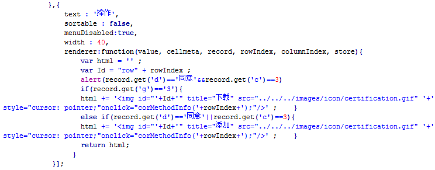

1.根据表达式中某个或者多个数据的值去判断按钮的显示或者隐藏。
示例源码：查看
引入控件JS文件
<script type="text/javascript" src="../../scripts/extjs/ux/ExtjsExtend.js"></script>
扩展功能1：
在操作列的按钮定义配置里添加属性 "显示表达式"
showExpr:"$d=='同意'&&$e==3"
$d$ 表示行记录中dataIndex : 'd'的列，$e 表示行记录中dataIndex : 'e'的列。
所以，表达式的含义为：根据每行中的dataIndex为d且d的值为'同意'，并且的dataIndex为e且e的值为3的时候该按钮显示。
参考代码如下：
{
text : '操作',
width : 80,
xtype : "actioncolumn",
items : [{
iconCls : 'download-button',
tooltip : "下载",
showExpr:'$d=="同意"&&$e==3'//为d=同意并且e=3
},
{
iconCls : 'add-button',
tooltip : "添加",
showExpr:'$d=="同意"||$e==3'//为d=同意或者e=3
},
{
iconCls : 'delete-button',
tooltip : "删除",
showExpr:'$e>1'//e大于1
},
{
iconCls : 'edit-button',
tooltip : "修改",
showExpr:'$e!=3'//e不等于3
}
]
}
原始写法对照： 判断代码冗余，且使用的是DOM嵌入html的方式
